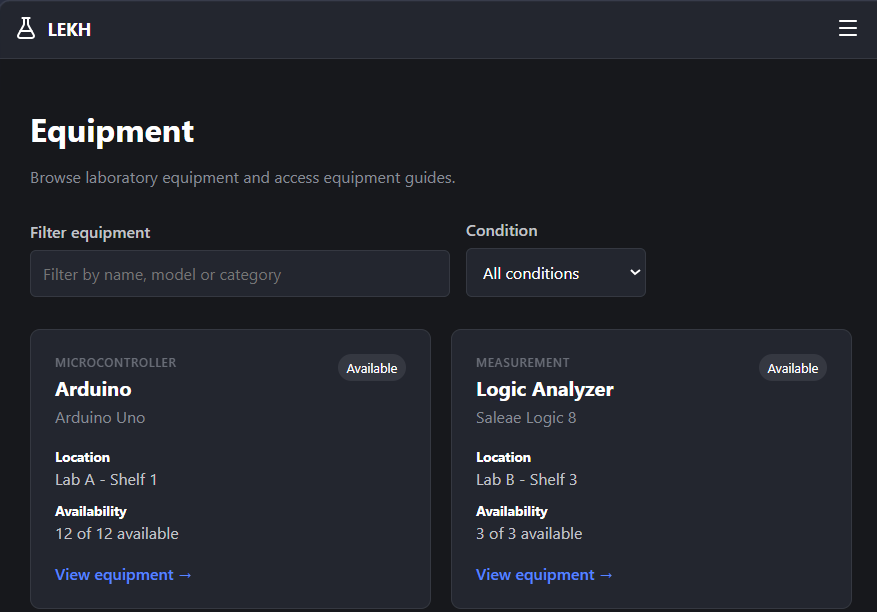
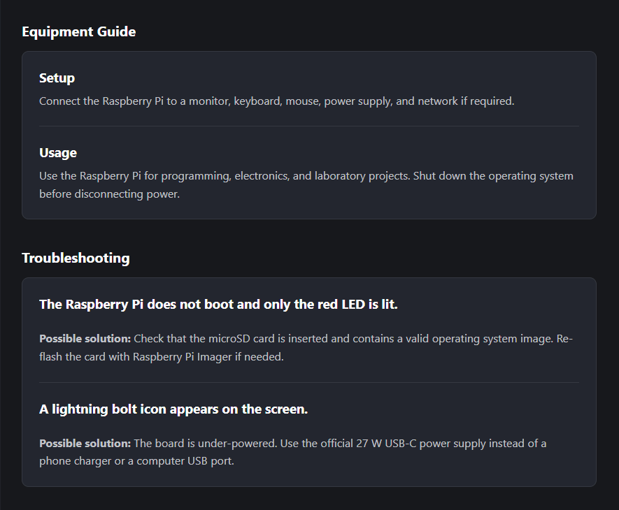
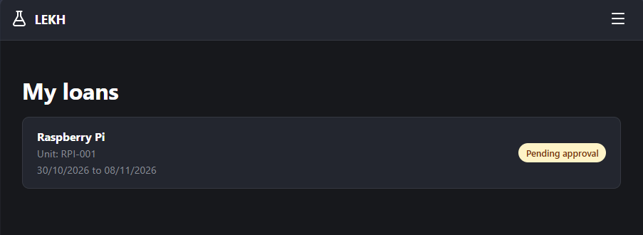
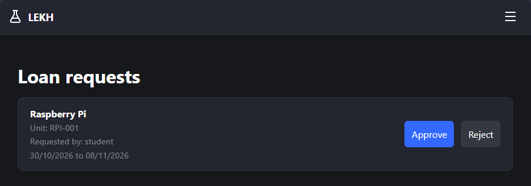

LEKH – Lab Equipment Knowledge Hub
A full-stack web app that gives a shared student lab one place for equipment guides, loans and fault reporting. Built for a customer in three sprints at Blekinge Institute of Technology, autumn 2026. I was the only developer.
- Result
- Accepted by the customer, 21 Oct 2026
- Tests
- 13 of 13 acceptance tests passed
- Stack
- React · Express · PostgreSQL · Prisma

“Yasaman started with what I had said mattered most rather than what was easiest and had equipment guides in place in the first sprint while most others were still building inventory lists. The finished solution did what I had asked for, project library included, which was the part most people left out.”
The problem
The lab is full of Raspberry Pis, microcontrollers, sensor kits and 3D printers, but how to set them up, what usually goes wrong and how to fix it lived in people’s heads. When the staff responsible for the equipment changed, that knowledge was lost.
The customer’s first proposal asked for much more: a booking timeline, QR tags, consumables, notifications and statistics. In two meetings we narrowed it down. Equipment knowledge came first, then inventory, loans and fault reporting, and the customer asked for quality over a long feature list.
How I worked
- Wrote the requirements specification with the customer, through eight versions, with a table tracing each acceptance test to its requirements and backlog items.
- Planned three sprints in GitHub Issues and a project board, with a demo to the customer after each sprint.
- One branch per backlog item, merged through pull requests against a written Definition of Done.
- Built the guides first, because that was the customer’s top priority, not the easiest part.
What it does
- Student
- Search equipment, read setup guides and troubleshooting, request loans, return with a checklist, report faults, record projects that used the equipment.
- Maintainer
- All of that, plus managing equipment and units, writing troubleshooting entries, approving loans and resolving faults.
- Admin
- Everything a maintainer can do.



Access control and security
In place today
- Every API route except register, login and logout requires a signed-in session.
- Maintainer and admin actions are checked on the server, not only hidden in the interface.
- Students can’t see who has borrowed a unit.
- Passwords are hashed with bcrypt, and sessions are kept on the server.
- Secrets live in an untracked
.envfile, and I checked the git history for leaked secrets before making the repository public.
Gaps I found when I reviewed my own code
- The session ID isn’t renewed at login, which leaves room for session fixation.
- Sessions use the default in-memory store, and the cookie isn’t set up for production
(
secure,sameSite). - There is no rate limit on login attempts.
- The access rules are tested only by hand. No automated test proves them yet.
What I’m doing next
The course ended at customer acceptance. I’m continuing the project to make it production-ready: fixing the gaps above, adding automated tests for the acceptance tests and every role rule, and then deploying it to Azure with CI/CD.